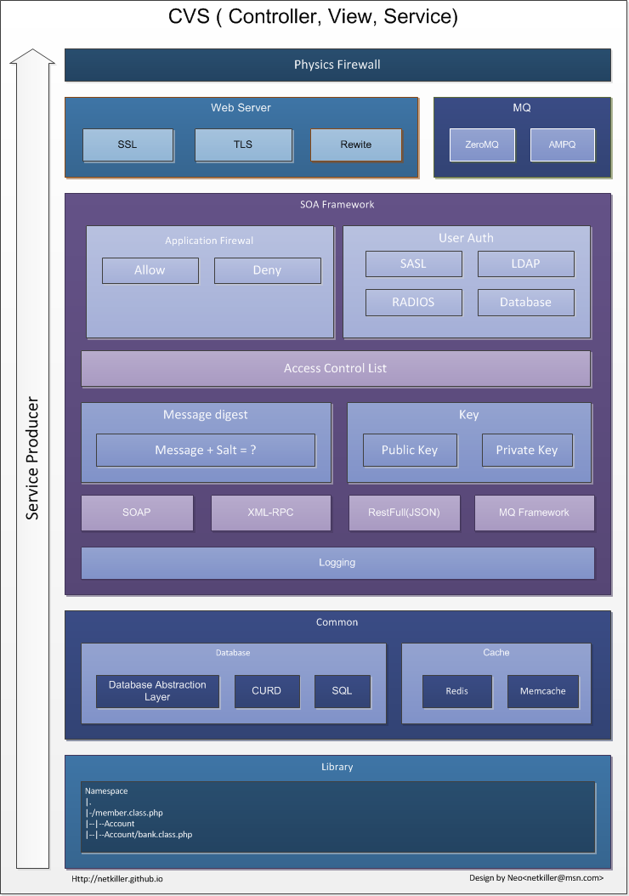
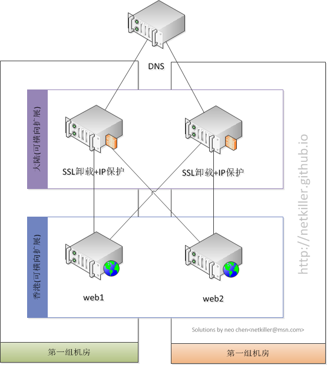

CVS开发框架
http://netkiller.github.io/journal/cvs.html
版权 © 2014 http://netkiller.github.io
版权声明
转载请与作者联系，转载时请务必标明文章原始出处和作者信息及本声明。
|
|
|
微信扫描二维码进入 Netkiller 微信订阅号 QQ群：128659835 请注明“读者” |


2014-09-26
您可以使用iBook阅读当前文档
1. 什么是CVS框架
CVS(Controller, View, Service) 是控制器、视图、服务框架。
View 视图层不用多说
Controller 控制器层，负责用户业务逻辑
Service 服务层，服务端业务逻辑与数据存取操作
我提出的CVS其实是MVC去掉Mode其他保持不变, 将Mode替换为Service, 同时将以部分Controller逻辑放入 Service 实现业务逻辑共享。
2. 为什么采用CVS模式开应用程序
目前软件开发领域主流MVC模式，或者其他MTV，CURD等等，往往都是MVC不分离，即业务逻辑与数据库操作不分家。这给带来了很多数据安全问题。
通常DBA会提供一个数据库访问用户，该用户可以做“增”、“删”、“查”、“改”操作，权限的颗粒度控制比较粗糙，例如对行的权限，列的权限控制就比那麽容易做。
以上谈的是为什么采用CVS模式开发的原因之一。
第二个原因是大型系统不可能使用一台服务器，而是分布式模式，这就带来了很多应用跨物理机的访问，我们将很多业务逻辑以服务的方式提供集群节点调用。
这种模式同时我们的服段提供分布式部署，负载均衡与高可用需求。解决了性能问题、横向扩展问题等等。
3. 何时采用CVS模式开发
立项之初决定采用CVS模式开发当然最好，如果没有，可以中途新增功能采用CVS模式，然后逐步向CVS模式过度。
4. 何处采用CVS模式开发
5. 谁来做，以及分工问题
在我的团队中，由于安全问题，我将开发团队分为几个部门，分出一部人专门负责Service的开发，这样其他开发者无需关心数据库解决以及数据存储。只需要安装前面的团队提供的接口文档开发即可。
另外这种开发模式有个好处，它利于多个项目同时开发，我们只需提前定义好接口的名称、输入参数与输出参数，开发与调试每个团队可以自行模拟接口的返回数据，提前开发功能模块。
6. 怎样设计并实施CVS
下面是我设计的CVS框架，并在我的工作中得到广泛应用，从反馈角度看，目前无论是安全性，还是性能，伸缩性，都非常满意。
|  |
下面我们分别讲解每个部门的功能与作用。
6.1. 入口部分
框架最顶层是物理防火墙，常同时硬件设备，这里不多说。对于访问者直接面对的是web服务器与mq服务器。
我提供json, soap, xml-rpm 通过web服务器向访问者提供服务，另一个通道是MQ消息队列服务器，你可以扩展前端接口并提供其他形式的接口。例如fifo,基于tcp/ip的ipc, unix socket等等。
6.2. 应用防火墙，用户认证，访问控制列表
应用防火墙是软件层面防火墙，在我们没有能力购买昂贵的硬件设备的时候，我们可以使用该功能，用来阻止或放行IP地址。如果你有硬件防火墙，我仍然建议你使用，可以防止网络管理员配置上的疏忽。
用户认证不必多说，我们提供很多种用户认证渠道。
ACL 是控制Class 与 Method 的访问权限，我通常会创建很多用户，例如frontend针对前端，面向用户，backend针对后台，面向企业员工等等，下面我举一个例子：
'frontend' => array(
'frontend/Exchange'=> array('getOne','',''),
'frontend/Userinfo'=> array('getUserInfo','getMemberInfo',''),
'frontend/Config'=> array('getWithdrawingConfig','getPlatFormConfig',''),
'frontend/Keyloggers'=> array('insertSignupKeyloggers','deleteSignupKeyloggers'),
'frontend/Allinpay'=> array('insertOrder','updateOrder','isFirstAccount'),
'frontend/Members'=> array('getChineseNameMobile','changeMemberPassword','resetMemberPassword','getLoggingTime','insertMember','checkUserRealName'),
'frontend/Balance_report'=>array('getdayreport','getmonthreport'),
'frontend/Notice'=>array('send','registerVcode','passwordVcode'),
'frontend/Pay'=>array('showPayList','pay'),
'frontend/Accounts'=>array('isFirstAccount','isFirstAccountAngelFund'),
'frontend/Exchange'=>array('getRate'),
'frontend/Card'=>array('upload'),
),
'backend' => array(
'backend/Keyloggers' =>array('SelectSignupKeyloggers','updateSignupKeyloggers','SelectSignupKeyloggersAll'),
'backend/Members'=> array('selectPasswordLog','downPasswordLog'),
'backend/Balance_report'=>array('getdayreport','getmonthreport','getshow'),
),
'anonymous' => array(
'News'=> array('getNews','getFirst','getTop10'),
'RSS'=> array('','','')
)
'soap' => array(
'Members'=> array('getAllByUsernameAndMobile','getAllByLimit',''),
'Exchange'=> array('getOne','',''),
'Soaplog'=> array('info','debug','warning','error'),
)
6.3. 消息摘要与证书
json 模式访问服务需要验证指纹摘要信息，一可以确认人份，二可以验证数据完整性
我们还提供非对称加密传输，通过公钥与私钥配对加密与解密。
综上所述我们在安全方面基本都考虑到了，比较全面，可以说武装到牙齿。
6.4. 日志
记录每一次访问，包括IP来源地址，用户名，访问类方法以及访问时间。
6.5. 数据库抽象层
这里也不必多说
7. 怎样部署CVS
我们分开部署SSL与WEB服务器，不要让SSL加密与解密过程影响到Service的工作，这种做法通常叫SSL卸载。可以将SSL放在F5等负载均衡设备之上，也可以使用廉价的服务器。
|  |
服务器的负载均衡这里也不多说。
+------------------------+
.-------------> | JS, CSS, Javascript |
/ +------------------------+
/
+------+ +------+ +----------+
User ---> | HTML | ----------> | View | ---> | Template |
+------+ +------+ +----------+
\ ^
\ |
\ +------------+ +---------+ +---------+ +----------+
`--- Ajax ---> | Controller | ---------> | Service | ---> | Cache | ---> | Database |
+------------+ +---------+ +---------+ +----------+